Test Post
Woohoo!
I’m Aen and I study how craft, consideration and consciousness make us creative. Scroll down for my latest insights. README to know me.
Woohoo!
It’s still January, not too late to add having a new blog to my resolutions. My last good blog aentan.com lasted two point five years and was decently successful. I had a couple of Hacker News front page articles, a repost on Lifehacker and various job opportunities. Problem was… maintaining a WordPress site in a shared hosting environment became too much of a chore and I let it slip. Dreamhost was a hundred bucks a year. Didn’t make sense anymore.
I tried to develop my own blog engine Pure and wrote a couple of articles on it. It was an ambitious project in which articles are visually composed like Keynote or Powerpoint slides. It’s a Javascript monster. I spent a year developing it with my free time but it didn’t stick with me. I have to use a browser to write and I couldn’t do it offline. Still feels like a lot of work.
So here I am with a new setup. It’s much better and it’s free.
I experimented with Jekyll and it wasn’t flexible enough for me. Then I discovered Middleman. Like Jekyll it’s a Ruby gem but much more flexible. It’s based on Sinatra, like a mini framework. I also get an asset pipeline which means I can serve minified and concatenated assets for better front-end performance. And since it’s a static site, there’s no server-side processing nor database and thus blazing fast.
I’m putting the entire blog and it’s content in a public repository on Github. It makes sense because the content is public anyway. It also opens up the possibly of contributing articles by pull-request. Most important of all, Github is free. Github pages are served by Github’s CDN which wouldn’t have been trivial nor free to set up on my own hosting. Using a decentralized source-control system like Git means I’ll always have my blog and content backed up locally. Even if Github dies tomorrow (pretty unlikely) I can easily redeploy the site somewhere else like Heroku.
Underneath the hood is Bootstrap which makes the site adaptable to various devices and screen sizes. Blogs should be responsive. Reading Wordpress blogs isn’t so nice on mobile devices. Using plugins to make it work was so ugly I didn’t even bother to do it with my old blog. Bootstrap is a better way.
Besides jQuery which is pretty much a standard for interactivity on most sites, I’m using GSAP for animating the masthead. It’s 20× faster than jQuery and even faster than CSS3 animations and transitions. See the speed comparison.
Though I didn’t continue using Pure I liked its simple content-centric design. Blogs are not marketing websites. The content should take center stage. Typography and whitespace are the chief elements of a good blog design. Medium and ALA embody this functional aesthetic well.
The typefaces used are Brandon Grotesque for headings and Chaparral Pro for body text, from Typekit. I find Brandon a softer, more down-to-earth Futura and Chaparral has a smart character.
The animated masthead at the top of the homepage represents my consciousness. It’s some of the things that have inspired me and defined me – books, films, music, favorite things, brands, possessions. They’d give you a good idea of the person I am. I created a script called Bokeh and it uses GSAP for hardware-accelerated animation.
 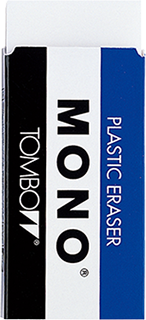
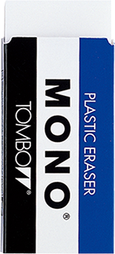 


 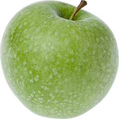
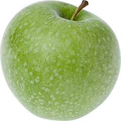 


 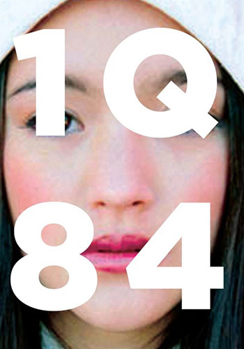
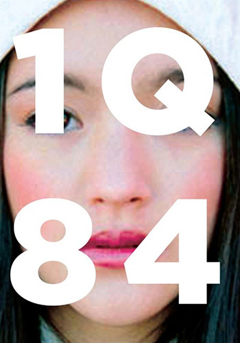  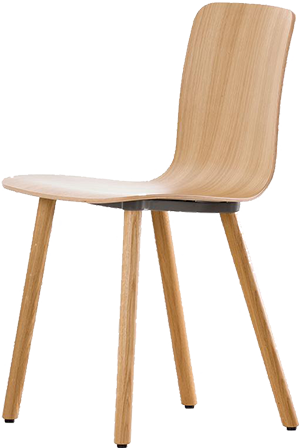 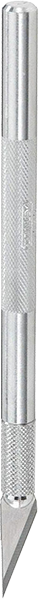 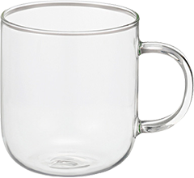 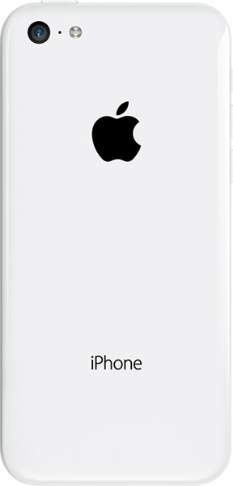 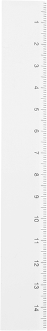
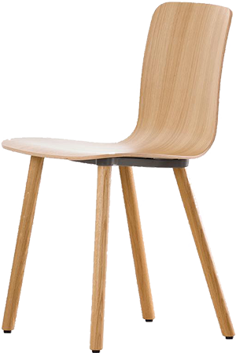 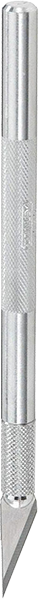 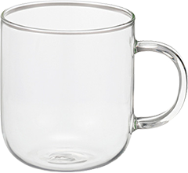 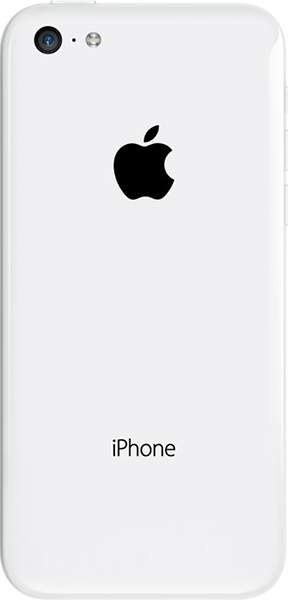 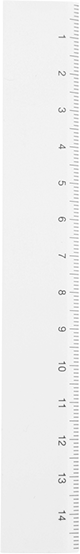 


 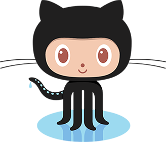 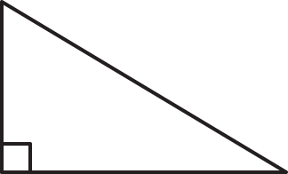
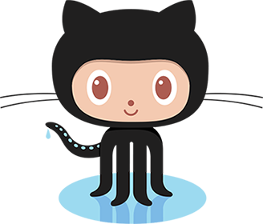 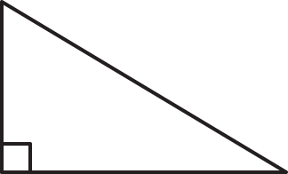